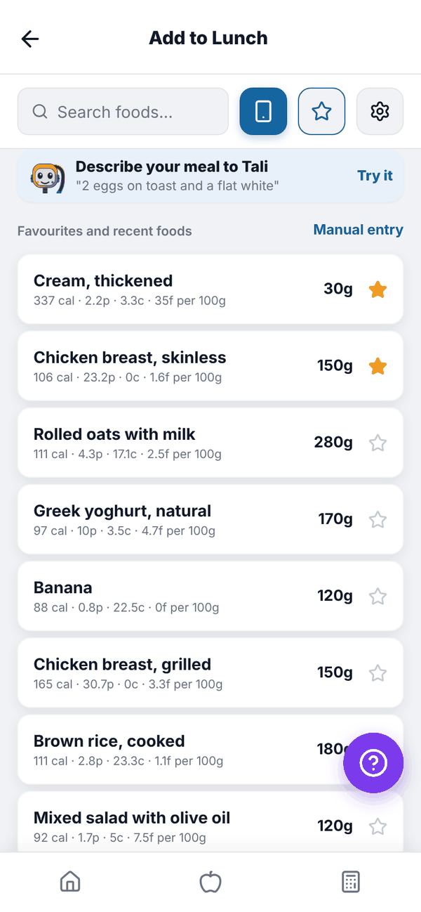
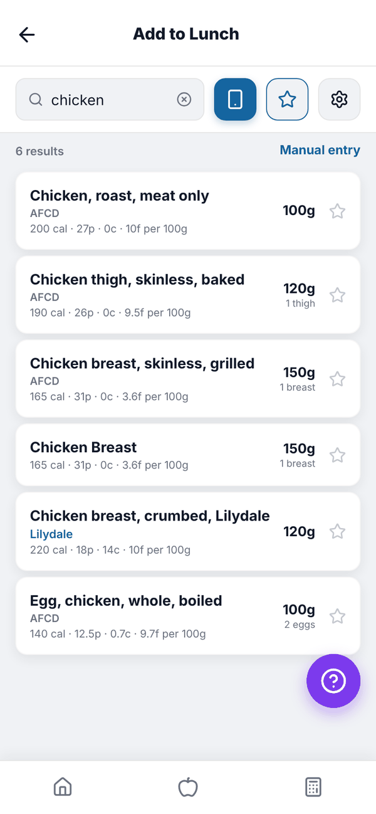
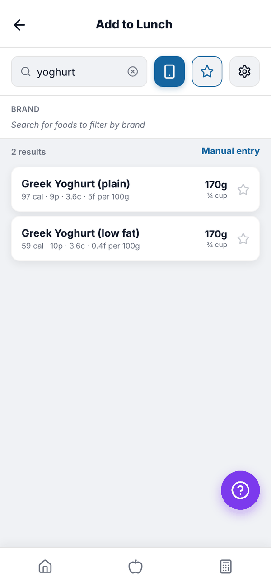
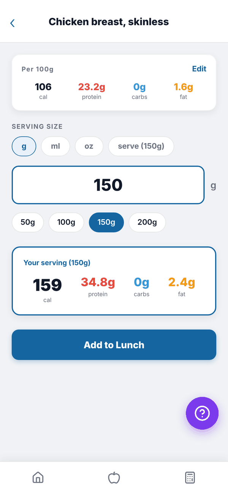
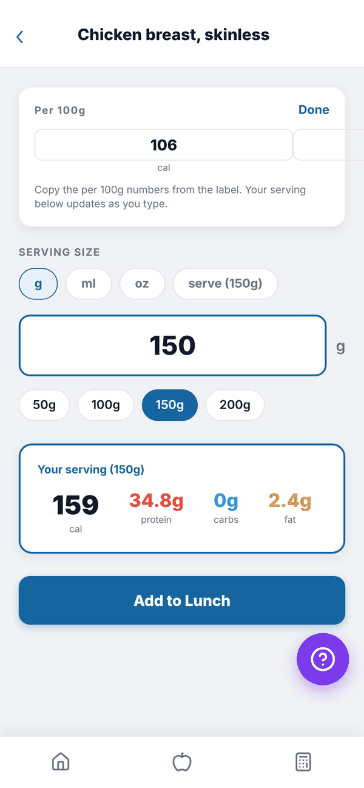
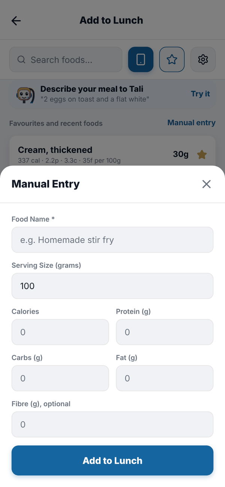

Totality Nutrition guide
Add food
Search the food database, use favourites and recent foods, choose a serving, fix label numbers and enter food by hand.
Add food is where you search for a food and add it to a meal. It opens from the + on any meal in your food log. Search, favourites, recent foods and manual entry are the same on Free, Trial and Paid.

The top row#
- Search foods... box.
- The blue phone icon scans a barcode. See Barcode scanning.
- The star opens your saved meals.
- The gear opens the Brand filter.
Under it, Describe your meal to Tali opens Tell Tali. See Tell Tali what you ate.
Search for a food#
- Type a food, for example "chicken". Results appear as you type.
- Each result shows its name, brand, where the data comes from (AFCD, USDA, Open Food Facts or User added), and calories, protein, carbs and fat per 100 g. On the right is its usual serving, like "150g, 1 breast".
- Tap the food you want.


Australian foods from the AFCD (the Australian Food Composition Database) and other government data come first, then packaged foods from Open Food Facts. Foods you've logged recently rank higher. To narrow by brand, tap the gear and pick a brand, or All. Clear filter removes it.
Choose your serving#
- Check the Per 100g card.
- Under SERVING SIZE, pick a unit: g, ml, oz, or serve when the food has a known serving, for example "serve (150g)".
- Type the amount, or tap a quick size: 50g, 100g, 150g or 200g (or 1, 2, 4 or 6 oz).
- Your serving shows the calories, protein, carbs and fat for that amount.
- Tap Add to Lunch (or whichever meal).


A green banner confirms it's added and you stay on the screen to add more. If a product has no serving size on its label, it starts at 100g and tells you so.
Fix wrong label numbers#
If a food's numbers look wrong, tap Edit on the Per 100g card and type the numbers from the label. Your serving updates as you type. Tap Done when finished. Per 100g numbers over 900 calories, or over 100 g of protein, carbs or fat, are refused with "Per 100g numbers look too high - check the label."
Favourites and recent foods#
With the search box empty, the list shows Favourites and recent foods.
- Tap the star on any food row to make it a favourite. Favourites stay at the top. Tap the star again to remove it.
- Recent foods are the foods you've logged lately.
Favourites are kept on the device you starred them on, so a favourite on your phone won't show on the web. You can keep up to 40.
Manual entry#
For food that isn't in the database, tap Manual entry (or Enter Manually when a search finds nothing).
- Type a Food Name, for example "Homemade stir fry".
- Type the Serving Size (grams).
- Type Calories (or Energy (kJ)), Protein (g), Carbs (g) and Fat (g). Fibre (g), optional is there too.
- Tap Add to Lunch.

Questions#
Why can't I find a food?
Try a simpler word ("bread" instead of "sourdough"), the brand name, or scan the barcode. If it's still not there, use Manual entry.
What does "User added" mean?
The food came from a barcode scan or a packaged food someone else logged. It's shared so the next person finds it faster.
Is there a limit on how much I can enter?
One entry can't be more than 5000 g, 10,000 calories, or 1000 g of protein, carbs or fat. This stops typos wrecking your totals.
My favourites disappeared.
Favourites live on the device. If you cleared the app's data, reinstalled, or are on a different phone or browser, star them again.